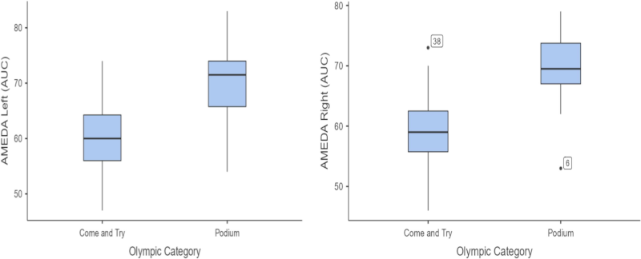

Technology and Talent Identification
Talent identification is a value judgment. Talent identification is also a prediction. That’s two ways to get it wrong in the face of uncertainty. Like so many uncertain situations, the more information you have, the more options you can give yourself, and the better decision you can make. Technology-aided decision-making plays a larger and larger role in talent identification (and evaluation). So it’s not just more information; it’s also better tools.
Talent ID has the same kind of power asymmetries and surveillance problems that can occur with coaches in team sports and affect athletes’ privacy. It might be a little more insidious given the longer time frames involved with evaluating the potential of teenage athletes coupled with the growing likelihood of young athletes either washing out or burning out of competitive sports. Please keep this in mind as I move through a longer discussion of talent ID technologies and their potential impact on process.
Researchers in Australia used a machine learning classifier to differentiate young divers in an Olympic development program. Data was collected by VVS-A assessment (visual-vestibular-somatosensory and autonomic) and by ankle proprioception measurement (more of somatosensory). “The visual and vestibular systems complement proprioception by integrating visual and vestibular inputs to maintain balance, postural control”, they write in their Introduction.

Their results show that proprioception is a clear-cut indicator of podium-level talent (see image). The machine learning classifier correctly identified 5/6 podium athletes – good but not perfect results. The researchers hope that further research will narrow what’s expected for VVS-A profiles among top-tier divers. They also hope that other sports can adopt VVS-A profiling appropriate for their athletes. The most optimistic outcome, according to the researchers, is to develop targeted training for lower-tier athletes that improves their VVS-A abilities (and their podium prospects).
All of the machine learning classification should complement traditional coaches’ evaluation and expertise, something that the researchers write in their paper. Longitudinal evidence is required for any of these technological methods to displace coaching experience as the primary selection mechanism. The situation is a potential Catch-22, the same buy-in that is necessary for coaches to adopt the technological help makes it unlikely that those same coaches will share data to make long-term longitudinal research possible.
Should talent identification professionals be skeptical of these classifier tools? Maybe. Research into the effects of AI on decision-making shows that, one, widespread use can de-skill a profession.
The UK Olympics talent pipeline seems to be doing things right. Anyone can apply for a session during the regularly scheduled UK Sport Talent ID days. “Talent ID is an opportunity for us to find athletes a little bit later in the journey than you might normally join a programme,” says Dr. Kate Baker, director of performance and people at UK Sport, in a BBC report. The Talent ID days uncover natural athletes, figure out their strengths, and apply those abilities in a sport that they had not tried before.
The key is to have inclusive opportunities for athletes to develop. Make the top of the talent filter as big as possible. It doesn’t stop with the inputs, however. There need to be lots of paths forward. A computing classifier for young divers, even in combination with a human coach’s evaluation, constrains the path to excellence. The thought of applying a classifier to come up with the single best training plan is kind of scary and a setup for young athletes’ overtraining and burnout. Fewer paths equal more problems.
Advantages of the Unathletic
Another point to make about talent identification and evaluation is that at some point the ultra-athleticism that dictates whatever the ceiling is for athletic potential will diminish. In its place, lesser but more creative, durable, and skilled performers will show talent evaluators that they possess greater expected value. The athleticism will eventually break down at earlier and earlier stages as coaches make greater use of the athletic ability in game models and game plans. At the same time, skills and savvy are proving to provide competitive advantages that succeed against superior fitness and athleticism.
Bruno Fernandes plays for Manchester United. He is 31 years old and due for another contract. He is also more creative, durable, and skilled than he is athletic. Will his skills and savvy outweigh the inevitable decline in speed and strength that comes with being past your peak? That is the bet that Man U will have to assess.
An article by Ryan O’Hanlon on ESPN.com highlights the Fernandes dilemma. It also mentions the falloff that Mohamed Salah has experienced at Liverpool FC due to his declining athleticism. When a player’s competitive advantage comes from athletic ability and that athletic ability diminishes past a certain point, that advantage goes away. The more limited athlete has developed ways to compensate against faster, stronger competitors. All of that learning provides a more sustainable advantage.
Cameron Boozer carved up the UConn defense in the Final Four despite playing with a broken face. I think that since he is not the most explosive or the fastest basketball player, he will experience a longer-term benefit. He has enough athletic ability and a strong enough frame to demonstrate his creativity and skill over and over and over again. We’ll see how the NBA Draft discussion goes, but I think that Boozer will be the first player taken.
Privacy is Caretaking
I had a group meeting this afternoon where the subject turned to business models for privacy technology. Someone said that Apple has lots of privacy technology and that customers don’t really care about it. Apple might make more money if they allowed iPhone apps to do more with user information, but they don’t. Users in nearly all cases won’t know the differences that come with enhanced privacy. Users might also like to pay less to have the app than what it costs with enhanced privacy.
Minnesota United soccer team released an update on the health of player James Rodriguez that said, “Minnesota United FC takes the health and privacy of its players seriously. The club and our medical professionals can unequivocally state there has been no clinical or laboratory evidence of rhabdomyolysis.” Rhabdomyolysis, also called rhabdo, is the potentially fatal breakdown of muscle tissue that can occur with extreme overexertion. It is a serious situation and a serious response by the team.
The emphasis by Minnesota United on health and privacy reminded me of Apple. I think that Apple highly values privacy because the company has the hard-earned reputation for design excellence. The reputation has been cultivated over decades, but it starts with the care Apple gives to customers who use their technologies. Privacy is often a small thing, but when it goes bad, it can be a big thing. By design, Apple customers have little to worry about when it comes to privacy and their data, whether those issues are small or large.
Acting as “caretaker” is an underrated aspect of user experience. To see Minnesota United stepping up as caretaker for James Rodriguez is an example for how teams at every level of competition can understand and value athletes’ privacy.
News
In a new #ScienceReview, researchers examine the evidence for how global diets have changed and strategies that could transition food systems toward a healthier future. in Bluesky and Science Magazine on April 7, 2026
What NBA players, coaches and execs are saying about tanking in ESPN.com by Anthony Slater on April 8, 2026
The NCAA is exploring a significant change to its eligibility rule, sources tell @YahooSports. The proposal creates an age-based standard: Athletes would have 5 years of eligibility from their 19th birthday or HS graduation. in X/Twitter by Ross Dellenger on April 8, 2026
I wrote a new paper explaining how to Use the Science of Cooperation to Build Effective Scientific Collaborations in Bluesky by Jay Van Bavel on April 7, 2026
Can you get anything from early fielding stats? When should you care about your team’s performance with RISP? What about the batters with just the right kind of swings? in Bluesky and MLB.com by Mike Petriello on April 7, 2026
The nonprofit status of NCAA athletic departments is starting to raise questions in The Conversation by Andrew Urbaczewski on April 2, 2026
The NCAA is considering new eligibility rules that would impact pre-college players & pro draft participation. Expect antitrust litigation should those rules go into effect. in Bluesky and Sportico by Michael McCann on April 6, 2026
How Shoot 360 Became One of the Nation’s Fastest-Growing Sports-Tech Franchises Via Video-Game-Powered Basketball Training in The Leap blog by Deborah Lynn Blumberg on April 6, 2026
Dusty May on modern day recruiting in X/Twitter by Field of 68 on April 2, 2026